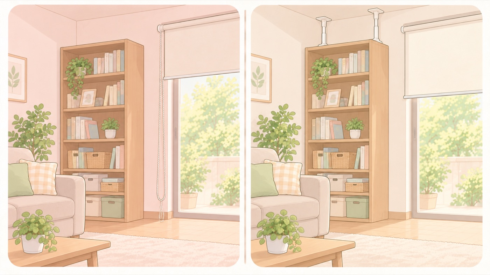

動けるうちに
家具を固定し、ひものない製品を選ぶ
母子健康手帳は、災害の備えを妊娠初期から始めるとしている。おなかが大きくなる前に済ませる
家具の固定は、赤ちゃんが動き始めてからでは遅く、おなかが大きくなってからでは体がつらい作業です。母子健康手帳の災害対策の欄には、生活必需品の備蓄や家具の固定が例として挙げられていて、妊娠初期から準備しておくと書かれています。あわせて、窓まわりの製品をこれから買うなら、選び方が変わります。

- すること：背の高い家具を、動けるうちに固定する
突っ張り棒やベルトで留めます。赤ちゃんが引き出しを開けて登るようになるのは先ですが、地震はいつ起きるか分かりません。 - すること：ブラインドやロールスクリーンを新しく買うなら、操作用ひものない製品を選ぶ
消費者庁は、新たに購入・設置する場合は操作用ひもが付いていない製品を選ぶよう呼びかけています。ひも付きなら、一定以上の重さがかかるとつなぎ目が外れるセーフティジョイントなどが付いたものを選びます。 - すること：すでに付いているひもは、上のほうでまとめる
クリップなどを使って、子どもの手が届かない高さでまとめます。近くに登れる家具を置かないことも必要です。 - しないこと：テレビを、置くだけで済ませない
転倒防止のベルトで固定します。
操作用ひもが危ない理由
操作用ひもが子どもの首に絡まると、気道がふさがれたり酸素が足りなくなったりして、 15秒以内に気を失い、2〜3分で亡くなる危険があります。 発見が遅れると取り返しがつかないため、ひもそのものをなくす選び方が確実です。
🛍 グッズの選び方
PR- 突っ張り棒は、家具の天板と天井のすき間に合う長さのものを選びます。壁に穴を開けずに済みます。
- 賃貸で穴を開けられないなら、粘着式のベルトという手もあります。
- テレビは専用のベルトで固定します。背面のネジ穴を使うものが確実です。
- すでに付いているブラインドのひもは、巻き取り器やクリップで上のほうにまとめます。
- 平安伸銅 家具転倒防止突っ張り棒 2本入（取付高さ22〜27cm・他サイズあり）壁に穴を開けられない家にAmazonで見る →（新しいタブで開きます）
- 家具転倒防止ベルト（穴あけ不要）穴あけ不要。突っ張り棒と併用できるAmazonで見る →（新しいタブで開きます）
- FORESIA テレビ転倒防止ベルト（震度7対応・VESA穴固定）VESA穴に固定。テレビ台と連結できるAmazonで見る →（新しいタブで開きます）
- ブラインドコード 巻き取り器 6個セット（ネジ付きコードフック）たるみを巻き取る。輪をなくせるAmazonで見る →（新しいタブで開きます）
- TOSO コードアジャスタNS 10個セット（シェードのコードをまとめる）シェードのコードをまとめるAmazonで見る →（新しいタブで開きます）
- ブラインド固定クリップ 8個（チェーン対策）チェーン式のブラインドを壁に留めるAmazonで見る →（新しいタブで開きます）
リンクはAmazonアソシエイトリンクです。当サイトはアフィリエイトプログラムに参加しています。Amazonのアソシエイトとして、当サイトは適格販売により収入を得ています。 選び方の方針
この項目の根拠
- 母子健康手帳 任意様式（こども家庭庁 母子健康手帳情報支援サイト・PDF）（新しいタブで開きます）
災害はいつ起こるかわからないので妊娠初期から準備しておくこと、住んでいる地域の情報をもとに家族などで事前に話し合っておくこと、家庭での災害対策の例として生活必需品の備蓄や家具の固定が挙げられていること。 - こども安全メール Vol.553 ブラインドやロール式網戸などの操作用ひもに注意！（消費者庁）（新しいタブで開きます）
操作用ひもが子どもの首に絡まった場合、気道閉塞による窒息又は酸素欠乏による神経障害が起こり、15秒以内に気絶し2〜3分で死亡する危険性があること。新たに購入・設置する場合は操作用ひもが付いていない製品を選ぶこと、ひも付きの製品であれば一定以上の重さがかかるとひものつなぎ目部分が外れるセーフティジョイント等の安全対策が施された製品を選ぶこと、設置済みの場合はクリップなどを用いてひもを上の方でまとめること、近くの家具に登って届くことがあること。